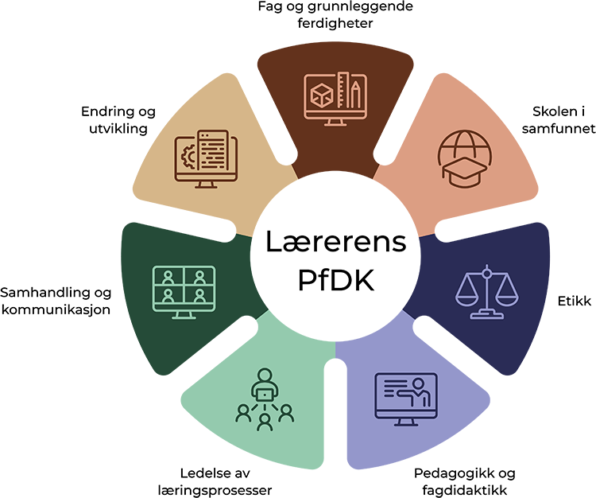

Hva er profesjonsfaglig digital kompetanse?
PfDk handler om den kompetansen lærere trenger for å bruke digitale verktøy på en faglig, pedagogisk og etisk forsvarlig måte — ikke bare tekniske ferdigheter, men en hel profesjonell praksis.
Rammeverket beskriver syv sammenvevde områder som til sammen utgjør det en lærer trenger å mestre i møte med digitalisering og KI.
↗ Udirs rammeverk for PfDk
Område 1
Fag og grunnleggende ferdigheter
Bruke digitale verktøy i faglig læring og utvikling av grunnleggende ferdigheter
Område 2
Skolen i samfunnet
Forstå teknologiens rolle i samfunnet og skolens demokratiske oppdrag
Område 3
Etikk
Reflektere kritisk over etiske spørsmål knyttet til digital praksis og KI
Område 4
Pedagogikk og fagdidaktikk
Integrere digitale verktøy i undervisning på pedagogisk forsvarlig vis
Område 5
Ledelse av læringsprosesser
Bruke digitale muligheter til å lede og støtte elevenes læring
Område 6
Samhandling og kommunikasjon
Kommunisere og samarbeide digitalt med elever, foresatte og kollegaer
Område 7
Endring og utvikling
Delta i profesjonell utvikling og bidra til skolens digitale endringsarbeid
Men — har dette rammeverket løst utfordringene? Ti år etter at PDC ble introdusert i norsk skole er tre grunnleggende problemer fortsatt uløste. Rammeverket beskriver hva kompetansen skal inneholde — men gir begrenset innsikt i hvordan den faktisk utvikles.